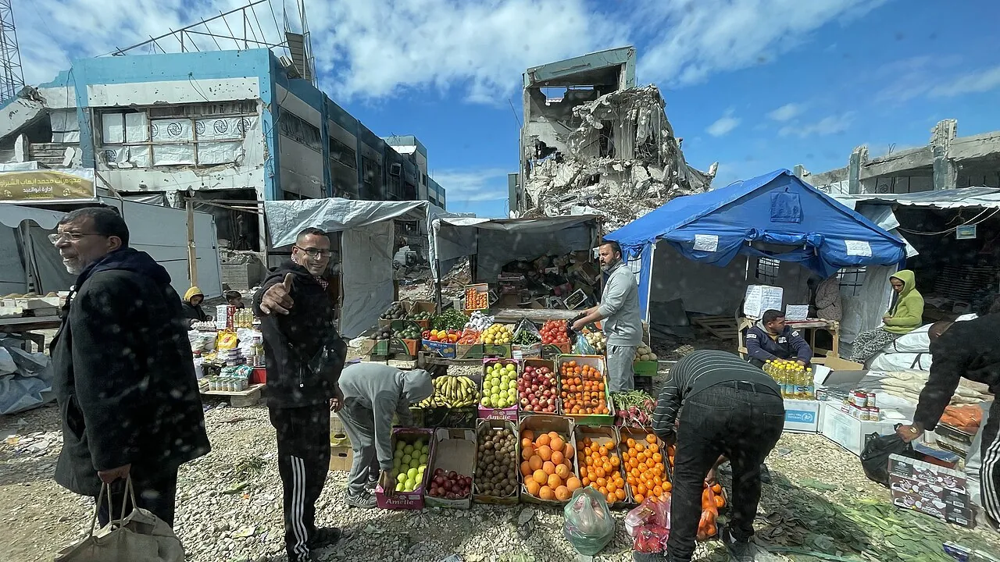

Gaza consumer prices rose 11.36% in September, statistics bureau says
Gaza Strip — A 25-kilogram sack of white flour averaged 56 shekels in Gaza; prices rose 0.53% in the West Bank and 0.44% in Jerusalem, the bureau said.
Edited by Hala Abu Sitta, Gaza desk


Consumer prices in the Gaza Strip rose 11.36 percent in September from August, pushing the index for Palestine as a whole up 4.69 percent, the Palestinian Central Bureau of Statistics said. Prices rose 0.53 percent in the West Bank and 0.44 percent in Jerusalem.
Average prices in Gaza included 56 shekels for a 25-kilogram sack of white flour, 41 shekels for a kilogram of frozen veal and 661 shekels for a 20-cigarette pack of Royal cigarettes, the bureau said.
Compared with September 2025, prices in Gaza were 46.43 percent lower, while West Bank prices were 3.34 percent higher, according to the bureau.
Share this report
The rest of this hour
Gaza death toll since October 2023 reaches 74,392, medical sources say
Three bodies and 17 injured people reached hospitals in 24 hours; 1,501 people have been killed since the ceasefire began a year ago.
Figures · Gaza · WAFA / Gaza medical sources
Israeli strike on Gaza City apartment kills a woman, local sources say
The apartment was near the Abu Talal junction in al-Rimal; several people were wounded, and heavy fire was reported east of Deir al-Balah and Khan Younis.
Update · Gaza · WAFA
Gaza health ministry says 68 of 116 hospital generators are out of service
Neonatal care at al-Rantisi and al-Shifa has been disrupted; a medical relief director says 2,027 patients have died awaiting treatment or evacuation.
Figures · Gaza · Quds News Network / WAFA
Egyptian surgeons resume open-heart operations at Gaza City hospital
The team at al-Quds Hospital, working with HEAL Palestine, aims to operate on about 30 patients while more than 200 critical cases wait, WAFA reported.
Story · Gaza · WAFA (video report)